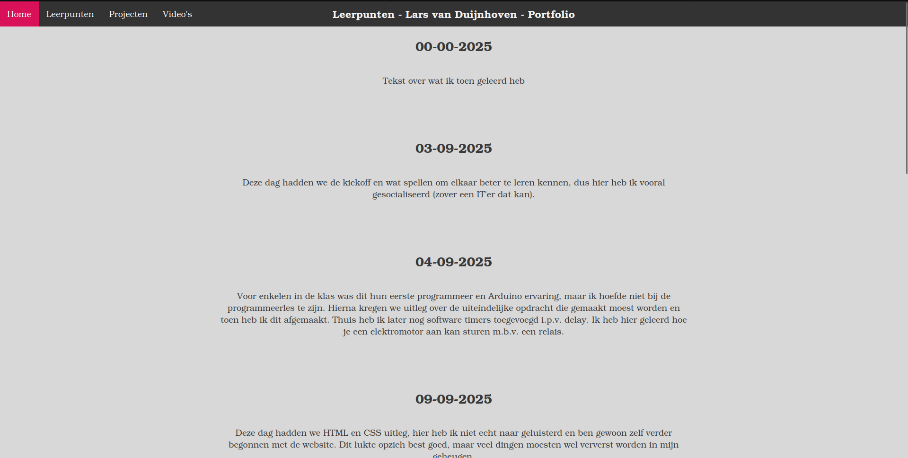
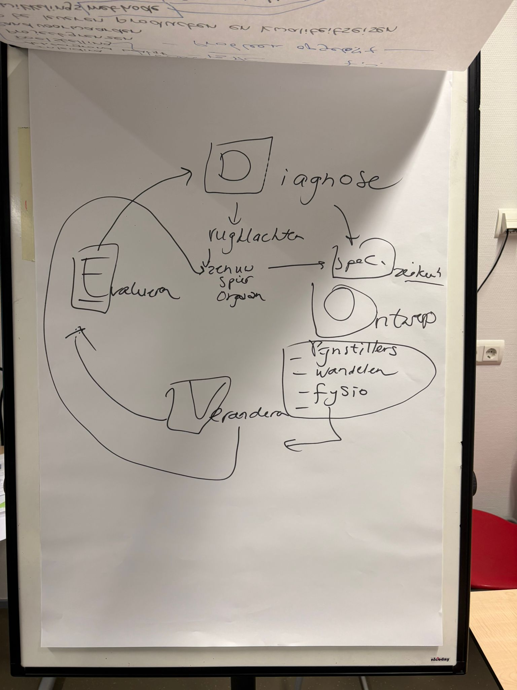
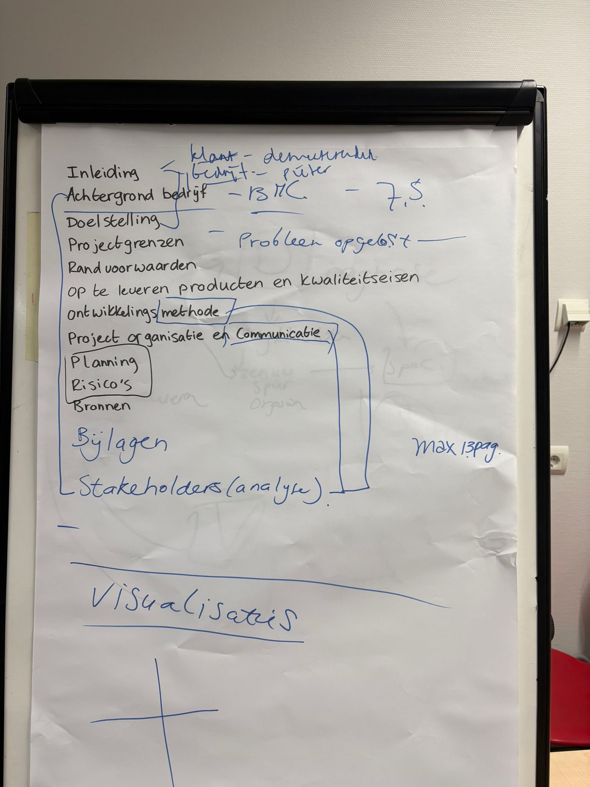

Deze dag hadden we de kickoff en wat spellen om elkaar beter te leren kennen, dus hier heb ik vooral gesocialiseerd (zover een IT'er dat kan).
Voor enkelen in de klas was dit hun eerste programmeer en Arduino ervaring, maar ik hoefde niet bij de programmeerles te zijn. Hierna kregen we uitleg over de uiteindelijke opdracht die gemaakt moest worden en toen heb ik dit afgemaakt. Thuis heb ik later nog software timers toegevoegd i.p.v. delay. Ik heb deze dag geleerd hoe je een elektromotor aan kan sturen m.b.v. een relais.

Deze dag hadden we HTML en CSS uitleg, hier heb ik niet echt naar geluisterd en ben gewoon zelf begonnen met de website. Dit lukte opzich best goed, maar veel dingen moesten wel ververst worden in mijn geheugen.
We moesten een BMC maken van een Turks verzekeringsbedrijf met specifieke categorie auto's. Na wat overleg en aanpassingen is de foto hieronder waar we mee kwamen.

Hieronder is dan de foto van onze BMC nadat we de oplossing gehoord hadden gekregen en waarna we hem aan moesten passen. Ik heb hiervan geleerd hoe een BMC werkt, waarom je er een zou maken en hoe je er een in kan vullen.
Ik heb geleerd hoe we data van de ESP32 naar een influx database kunnen sturen om dit overzichtelijk te maken in een soort dashboard. Voorheen had ik wel al gewerkt met de ESP32, maar niet specifiek met data doorsturen en ook niet met dashboards.


Hier hebben we veel over AI geleerd, maar helaas heb ik daar geen foto's meer van. Waar ik wel nog foto's van heb is het gebruik van de DOVE methode, begin aan het maken van het PvA en onze 0-meting maken. Ik had nog nooit van de DOVE methode gehoord, maar het klinkt als een vrij simpele, maar wel nuttige methode dus ik zal heb proberen te onthouden.
 


PCB ontwerp gemaakt
Bezoek bij Elk Groep, hier hebben we enkele opdrachten gemaakt en geleerd over lean en andere werkmethodes. Hier hebben we geoefend met samenwerken om tot een uiteindelijk idee te komen, maar vooral ook om rekening te houden met de LEAN principes.
Beetje Solidworks uitleg gekregen en geprobeerd, maar ook andere business dingen, alleen weet ik hier niet zo veel meer van.
API's toegevoegd voor de website, een weather API en NASA API. Hierbij heb ik geleerd hoe je een API moet toevoegen en dat dit vaak met een key gedaan moet worden.
Verder gewerkt aan Solidworks en mijn kennis hierover iets verbreed met de tutorials die op Brightspace staan. Hierbij heb ik wat handige trucjes geleerd, zoals de auto-alignment.
College over wat voor een effect technologie heeft op sociaal gebied, dus het werk van mensen en de mensen waar het effect op heeft. Hierbij heb ik geleerd dat mijn gedachtes klopten. Ik dacht van tevoren altijd al mee met de eindgebruiker, maar deze les heeft het nog versterkt. Verder heb ik ook geleerd in welke mate mijn producten het daadwerkelijke werk van de eindgebruiker kunnen veranderen. Hier had ik voorheen nog niet over nagedacht.
Juridische dingen over de Europese AI wet(ten), persoonlijk vond ik dit niet heel boeiend en heb ik niet echt iets nieuws geleerd. Het was meer een bevestiging van iets waarvan ik al verwachtte dat het bestond. Ook een online gesprek met Pieter (onze opdrachtgever) gehad over wat we konden maken, hiervoor heb ik 2 schetsen gemaakt om het uit te leggen aan de rest van de groep.


3D-print uitleg en cursus, maar hier wist ik vrij veel al van. Ik heb hier wel geleerd dat het FabLab nieuwe printers aangeschafd had. Verder hadden we de derde AI les, hier hebben we zelf AI gemaakt met Orange DM en kennis gemaakt met Data Mining en wat het inhoudt.

Heel eerlijk, ik ben compleet vergeten wat we deze dag behandeld hebben. Misschien de 4e AI les, maar ik durf het niet te zeggen.
Tekst over wat ik toen geleerd heb - *Afwezig*